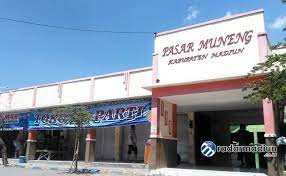

SEJARAH NAMA DESA MUNENG
Menurut sejarah dahulu Desa Muneng merupakan hamparan semak belukar yang banyak tumbuh-tumbuhannya, tumbuh-tumbuhan empon-empon yang paling banyak diantara tumbuhan lainnya. Tumbuhan empon-empon tersebut masing-masing punya nama yang berbeda-beda, antara lain : Temu Lawak, Temu Ireng, Temu Glenyeh dan masih banyak lagi lainnya. “e-Neng-e yo munr te Mu”, orang dahulu memberi nama daerah tertentu selalu dengan kenyataa yang ada, “Neng dan Mu”.
Lamun-lamun mbesok ono rejane jaman, alas iki kasebut deso MuNeng (seandainya nanti ada kemakmuran jaman, hutan ini disebut desa MuNeng), kata tersebut di ucapkan orang-orang dahulu kala. Pada akhirnya Desa Muneng sekarang ramai dengan segala aktifitas masyarakatnya.
beranda